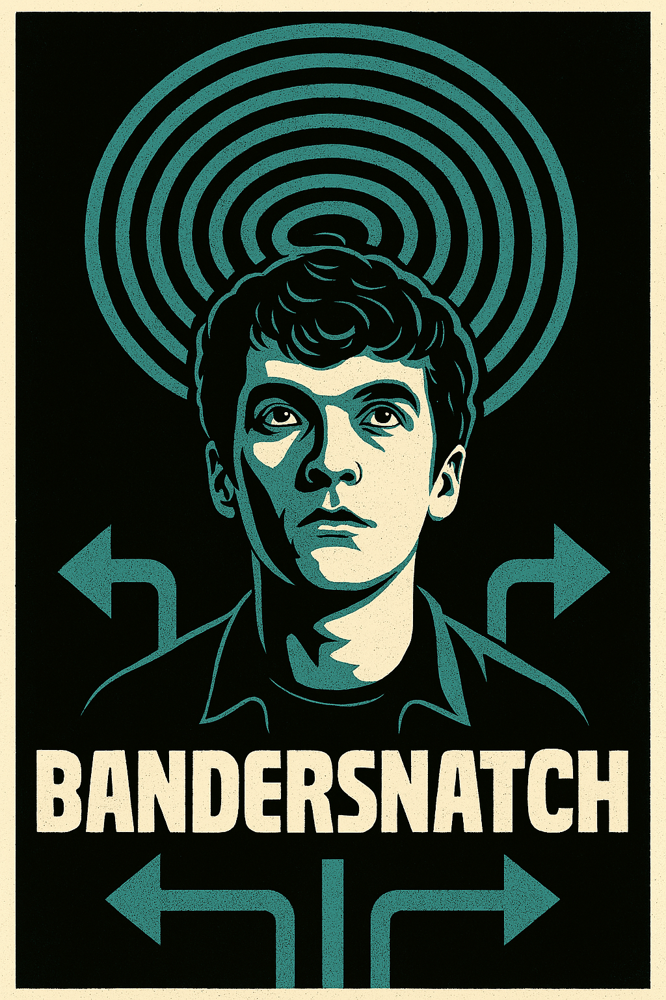

📜 Scenario
Il giocatore interpreta un giovane sviluppatore di videogiochi nel 1984, intento a programmare un gioco ispirato a un misterioso libro interattivo chiamato "Bandersnatch".
Durante il gioco, il protagonista vivrà una progressiva perdita di controllo sulle proprie scelte, mettendo in discussione la realtà stessa.
🎯 Caso d’uso
- Il giocatore effettua scelte testuali (es. "vai in ufficio", "rimani a casa") che modificano la storia.
- Il gioco presenta ramificazioni narrative, loop, finali multipli e dialoghi disturbanti.
- L’utente può raccogliere indizi, “rompere la quarta parete” e tentare di ottenere un finale “vero”.
🧱 Architettura del progetto
- Classe Giocatore: nome, stato mentale, scelte passate
- Classe Scena: descrizione, opzioni, conseguenze
- Classe Evento: effetti narrativi (loop, reset, glitch)
- Gestore della storia: coordina il flusso delle scene e tiene traccia della progressione
⚙️ Obiettivi didattici
- Progettare classi complesse con relazioni tra oggetti
- Gestire input utente, condizioni e variabili di stato
- Strutturare una storia interattiva con meccaniche narrative
👉 Nella prossima slide inizieremo a definire la struttura dati per le scene e i personaggi.